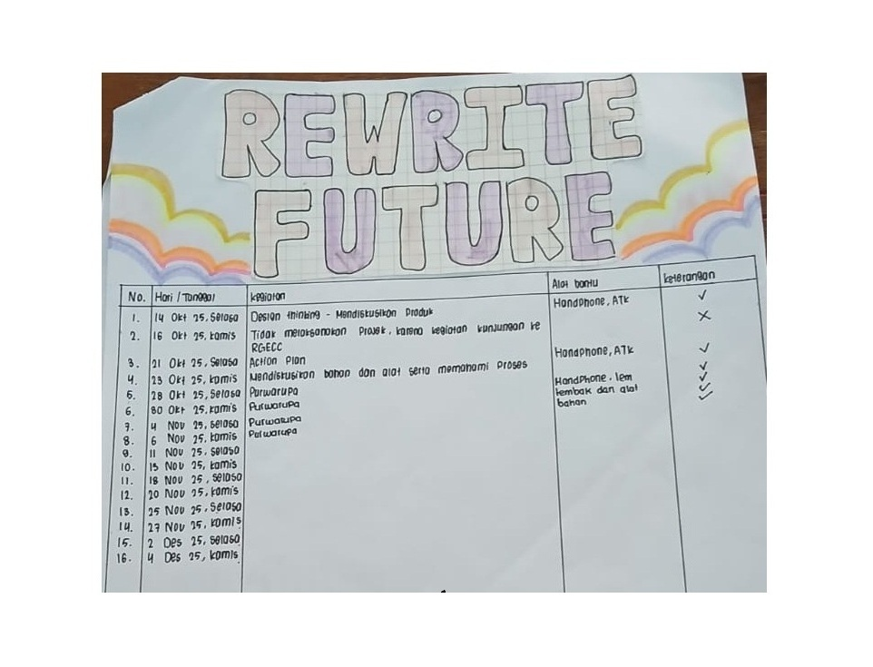
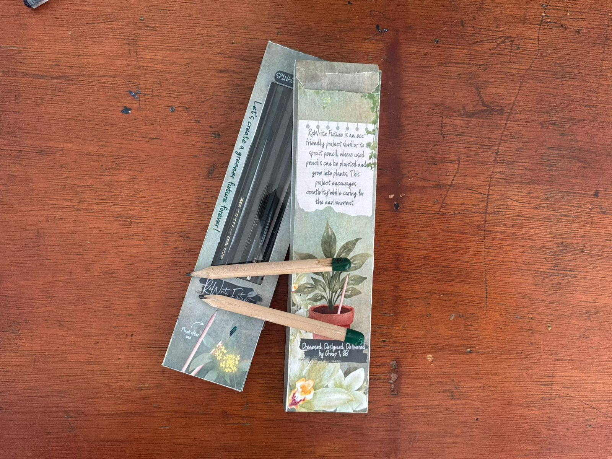
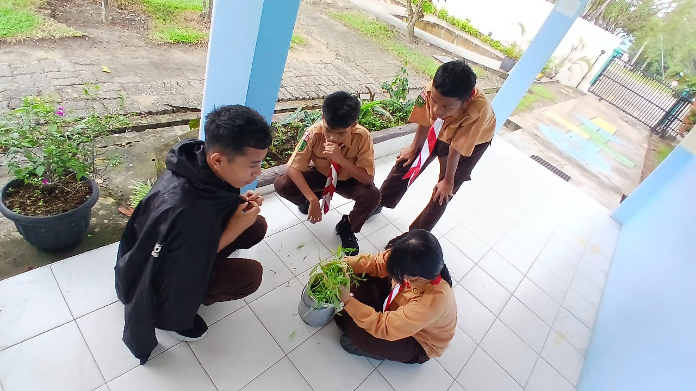
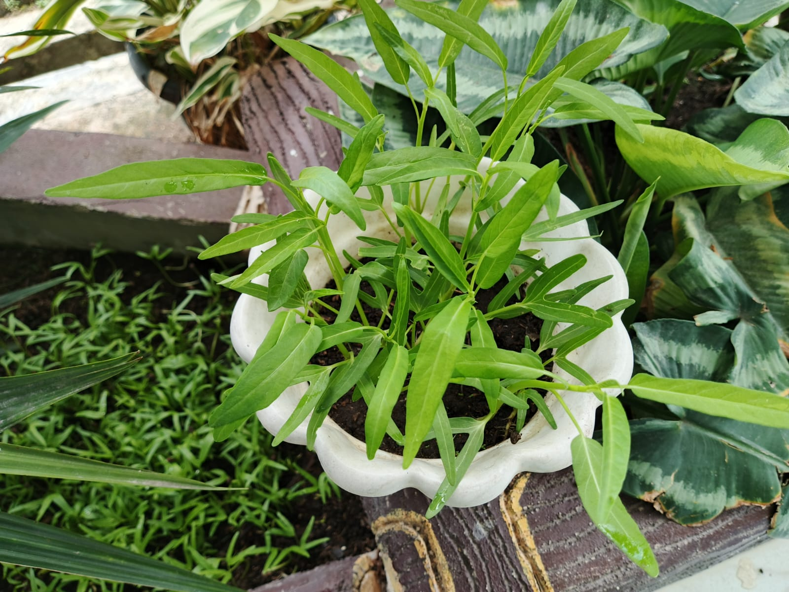
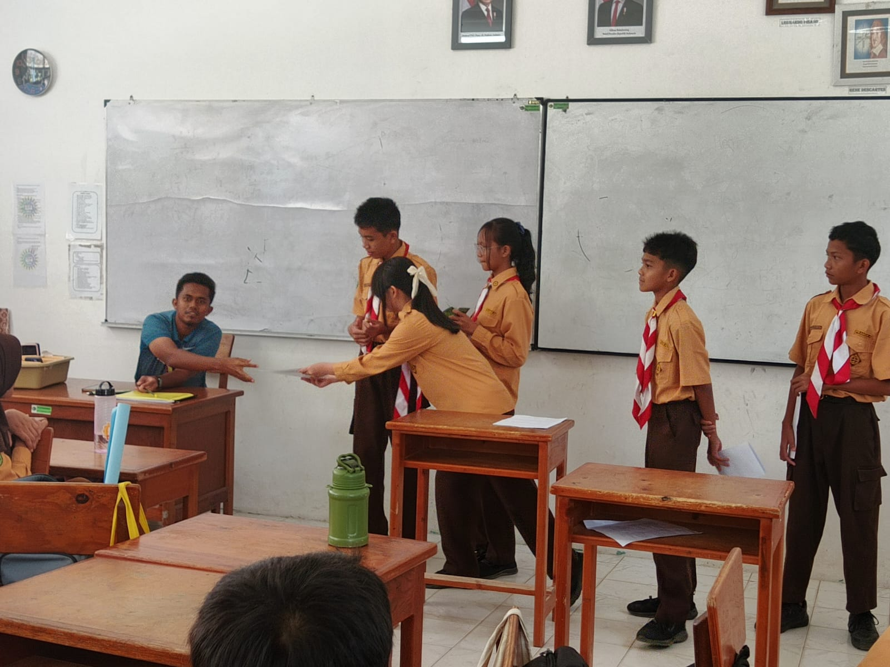

Dari Ide Menjadi Aksi
Tahap Purwarupa
Langkah 01: Strategi & Rencana Aksi
Sebelum memulai produksi fisik, kami menyusun rencana aksi yang matang untuk menentukan jadwal, pembagian tugas, dan target pencapaian tim.

Langkah 02: Membungkus Benih
Proses krusial pertama adalah memasukkan benih pilihan ke dalam kapsul pil. Kapsul ini berfungsi sebagai pelindung sekaligus media yang akan larut saat terkena air di dalam tanah.
Langkah 03: Perakitan Akhir
Setelah kapsul siap, kami menyatukannya ke ujung pensil secara manual. Tahap ini memastikan pil terpasang kuat namun tetap mudah dilepaskan atau ditanam saat pensil habis.
Langkah 04: Hasil Produk Final
Inilah wujud nyata dari "Rewrite Future". Sebuah perpaduan antara alat tulis sehari-hari dengan bibit tanaman yang siap memberikan nafas baru bagi bumi.

Langkah 05: Uji Coba (Tanam & Siram)
Kami melakukan pengujian langsung dengan menanam sisa pensil dan menyiramnya secara rutin untuk memastikan sistem "Rewrite Future" bekerja sesuai rencana.
Langkah 06: Bukti Pertumbuhan
Keberhasilan nyata! Dokumentasi hasil uji coba menunjukkan benih mulai berkecambah dan tumbuh sehat. Setelah ini, kami memproduksi lebih banyak untuk dibagikan.


Langkah 07: Sosialisasi & Presentasi
Kami membawa purwarupa final ini ke audiens yang lebih luas untuk memperkenalkan konsep konsumsi bertanggung jawab kepada sesama rekan di sekolah.


Misi Berhasil
"Rewrite Future" bukan sekadar pensil, tapi janji kami untuk masa depan yang lebih hijau.
Perjalanan Selesai